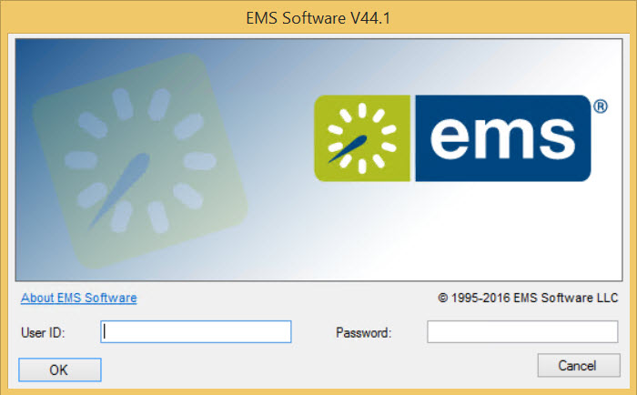
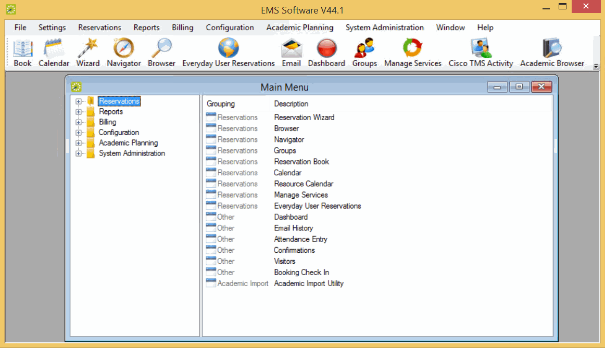

After EMS has been installed on your desktop, a shortcut icon for the application is placed on your desktop. An option for the application is also available from your Start menu. You can double-click the desktop icon to launch the EMS application, or you can select the option from your Start menu.
If you are the first person to log in to the EMS application at your organization, a dialog box opens where you enter the information for the login server and database that your application is accessing. (These are set up during implementation.) After you enter this information, the EMS Login dialog box opens.
EMS Login Dialog Box

Main Menu Dialog

Note: For security reasons, after you log in to EMS the first time using “admin” as both the username and password, at a minimum, we recommend that you change the account password. Ideally, you should create an entirely new administrator account with a new username and password. See Also: